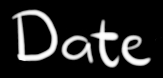

improv to bach and back.
Second Event · Saturday 3rd October 2026
.. an occasional event series for piano players and listeners in the Berlin community. Any styles and “levels” are welcomed. Some pieces will be piano only and some (in the second half) will be piano plus anything else. But always piano.
Get in touch at an event if you’d like to play at a future one. We’re grateful to the Ritterstraße 50 folks for letting us use their room and piano! Entrance is by donation and there will be drinks to buy. Bring your ears, friends. Phones in pockets!

Saturday 3rd October 2026